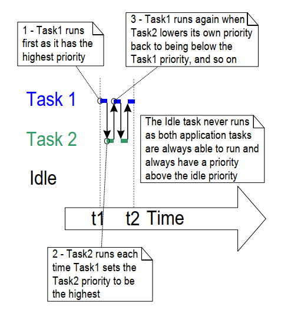

4.9 Changing the Priority of a Task
4.9.1 The vTaskPrioritySet() API Function
The vTaskPrioritySet() API function changes the priority of a task after
the scheduler has been started. The vTaskPrioritySet() API function is
only available when INCLUDE_vTaskPrioritySet is set to 1 in
FreeRTOSConfig.h.
void vTaskPrioritySet( TaskHandle_t xTask,
UBaseType_t uxNewPriority );
Listing 4.21 The vTaskPrioritySet() API function prototype
vTaskPrioritySet() parameters
-
pxTaskThe handle of the task whose priority is being modified (the subject task). See the
pxCreatedTaskparameter of thexTaskCreate()API function, or the return value of thexTaskCreateStatic()API function, for information on obtaining handles to tasks.A task can change its own priority by passing NULL in place of a valid task handle.
-
uxNewPriorityThe priority to which the subject task is to be set. This is capped automatically to the maximum available priority of
(configMAX_PRIORITIES – 1), whereconfigMAX_PRIORITIESis a compile time constant set in the FreeRTOSConfig.h header file.
4.9.2 The uxTaskPriorityGet() API Function
The uxTaskPriorityGet() API function returns the priority of a task. The
uxTaskPriorityGet() API function is only available when
INCLUDE_uxTaskPriorityGet is set to 1 in FreeRTOSConfig.h.
UBaseType_t uxTaskPriorityGet( TaskHandle_t xTask );
Listing 4.22 The uxTaskPriorityGet() API function prototype
uxTaskPriorityGet() parameters and return value
-
pxTaskThe handle of the task whose priority is being queried (the subject task). See the
pxCreatedTaskparameter of thexTaskCreate()API function, or the return value of thexTaskCreateStatic()API function, for information on how to obtain handles to tasks.A task can query its own priority by passing NULL in place of a valid task handle.
-
Return value
The priority currently assigned to the task being queried.
Example 4.8 Changing task priorities
The scheduler always selects the highest Ready state task as the task to
enter the Running state. Example 4.8 demonstrates this by using the
vTaskPrioritySet() API function to change the priority of two tasks
relative to each other.
Example 4.8 creates two tasks at two different priorities. Neither task makes any API function calls that could cause it to enter the Blocked state, so both are always in either the Ready state or the Running state. Therefore, the task with the highest relative priority will always be the task selected by the scheduler to be in the Running state.
Example 4.8 behaves as follows:
-
Task 1 (Listing 4.23) is created with the highest priority, so it is guaranteed to run first. Task 1 prints out a couple of strings before raising the priority of Task 2 (Listing 4.24) above its own priority.
-
Task 2 starts to run (enters the Running state) as soon as it has the highest relative priority. Only one task can be in the Running state at any one time, so when Task 2 is in the Running state, Task 1 is in the Ready state.
-
Task 2 prints out a message before setting its own priority back down to below that of Task 1.
-
When Task 2 sets its priority back down, then Task 1 is once again the highest priority task, so Task 1 re-enters the Running state, forcing Task 2 back into the Ready state.
void vTask1( void * pvParameters )
{
UBaseType_t uxPriority;
/*
* This task will always run before Task 2 as it is created with the higher
* priority. Neither Task 1 nor Task 2 ever block so both will always be in
* either the Running or the Ready state.
*/
/*
* Query the priority at which this task is running - passing in NULL means
* "return the calling task's priority".
*/
uxPriority = uxTaskPriorityGet( NULL );
for( ;; )
{
/* Print out the name of this task. */
vPrintLine( "Task 1 is running" );
/*
* Setting the Task 2 priority above the Task 1 priority will cause
* Task 2 to immediately start running (as then Task 2 will have the
* higher priority of the two created tasks). Note the use of the
* handle to task 2 (xTask2Handle) in the call to vTaskPrioritySet().
* Listing 4.25 shows how the handle was obtained.
*/
vPrintLine( "About to raise the Task 2 priority" );
vTaskPrioritySet( xTask2Handle, ( uxPriority + 1 ) );
/*
* Task 1 will only run when it has a priority higher than Task 2.
* Therefore, for this task to reach this point, Task 2 must already
* have executed and set its priority back down to below the priority
* of this task.
*/
}
}
Listing 4.23 The implementation of Task 1 in Example 4.8
void vTask2( void * pvParameters )
{
UBaseType_t uxPriority;
/*
* Task 1 will always run before this task as Task 1 is created with the
* higher priority. Neither Task 1 nor Task 2 ever block so will always be
* in either the Running or the Ready state.
*
* Query the priority at which this task is running - passing in NULL means
* "return the calling task's priority".
*/
uxPriority = uxTaskPriorityGet( NULL );
for( ;; )
{
/*
* For this task to reach this point Task 1 must have already run and
* set the priority of this task higher than its own.
*/
/* Print out the name of this task. */
vPrintLine( "Task 2 is running" );
/*
* Set the priority of this task back down to its original value.
* Passing in NULL as the task handle means "change the priority of the
* calling task". Setting the priority below that of Task 1 will cause
* Task 1 to immediately start running again – preempting this task.
*/
vPrintLine( "About to lower the Task 2 priority" );
vTaskPrioritySet( NULL, ( uxPriority - 2 ) );
}
}
Listing 4.24 The implementation of Task 2 in Example 4.8
Each task can both query and set its own priority by using NULL in place of a valid task handle. A task handle is only required when a task wishes to reference a task other than itself, such as when Task 1 changes the priority of Task 2. To allow Task 1 to do this, the Task 2 handle is obtained and saved when Task 2 is created, as highlighted in the comments in Listing 4.25.
/* Declare a variable that is used to hold the handle of Task 2. */
TaskHandle_t xTask2Handle = NULL;
int main( void )
{
/*
* Create the first task at priority 2. The task parameter is not used
* and set to NULL. The task handle is also not used so is also set to
* NULL.
*/
xTaskCreate( vTask1, "Task 1", 1000, NULL, 2, NULL );
/* The task is created at priority 2 ______^. */
/*
* Create the second task at priority 1 - which is lower than the priority
* given to Task 1. Again the task parameter is not used so is set to NULL-
* BUT this time the task handle is required so the address of xTask2Handle
* is passed in the last parameter.
*/
xTaskCreate( vTask2, "Task 2", 1000, NULL, 1, &xTask2Handle );
/* The task handle is the last parameter _____^^^^^^^^^^^^^ */
/* Start the scheduler so the tasks start executing. */
vTaskStartScheduler();
/*
* If all is well main() will not reach here because the scheduler will
* now be running the created tasks. If main() does reach here then there
* was not enough heap memory to create either the idle or timer tasks
* (described later in this book). Chapter 2 provides more information on
* heap memory management.
*/
for( ;; )
{
}
}
Listing 4.25 The implementation of main() for Example 4.8
Figure 4.14 demonstrates the sequence in which the tasks in Example 4.8 execute, and the resultant output is shown in Figure 4.15.
 Figure 4.14 The sequence of task execution when running Example 4.8
Task1 is running
About to raise the Task2 priority
Task2 is running
About to lower the Task2 priority
Task1 is running
About to raise the Task2 priority
Task2 is running
About to lower the Task2 priority
Task1 is running
About to raise the Task2 priority
Task2 is running
About to lower the Task2 priority
Task1 is running
Figure 4.15 The output produced when Example 4.8 is executed